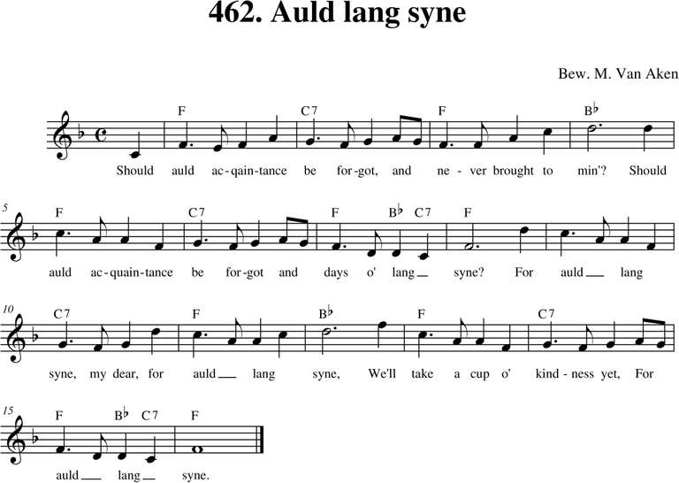
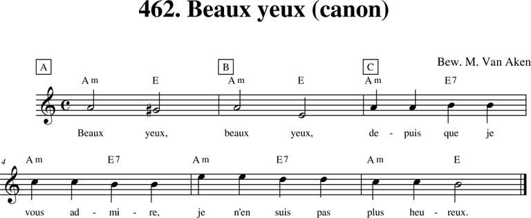
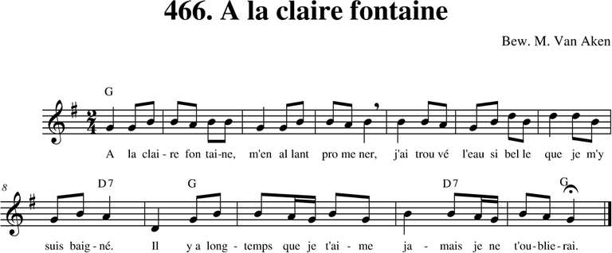
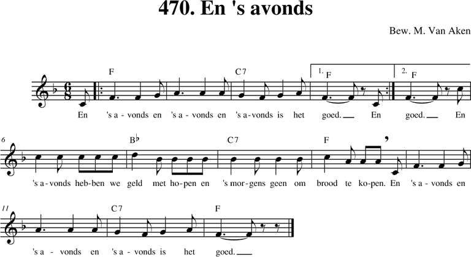
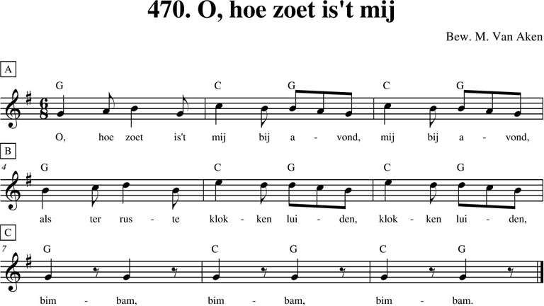
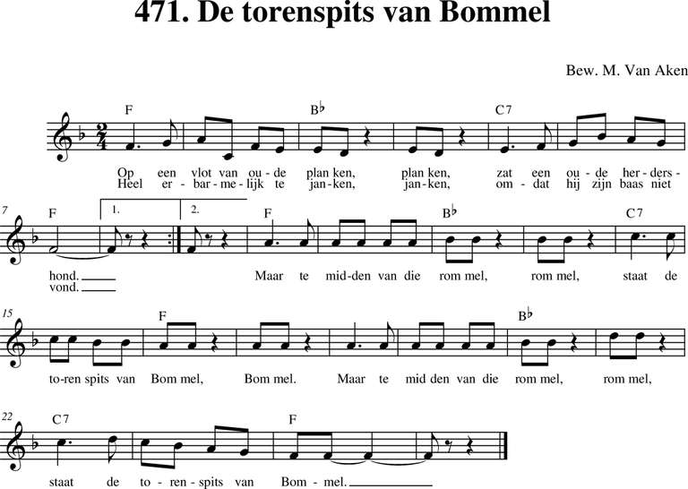

Menu
Bladeren
Alle liederen
p. 1-99
p. 100-199
p. 200-299
p. 300-399
p. 400-499
p. 500 e.v.
Taal
Nederlands
Frans
Engels
Duits
Latijn
Zuid-Afrikaans
Personen
Albrecht Rodenbach
Armand Preud'homme
Emiel Hullebroeck
Eugeen De Ridder
Jozef Simons
Philipp Silcher
René De Clercq
Stephen Foster
Meer...
Thema
Clubliederen
Ceremonies
Studentenleven
Historiek
Volk en land
Verleden
Bezinning
Were di
Pintjedrinken
Minne
Stemming en luim
NIEUWS
pagina
p. 400-499
(109)
461. My Bonnie
12/12/2018

462. Auld lang Syne
12/12/2018

462. Beaux yeux
02/02/2019
462. Drink to me only
02/02/2019
463. Au clair de la lune
12/12/2018
464. Auprès de ma blonde
01/01/2019

466. A la claire fontaine
01/01/2019

470. En 's avonds
01/01/2019

470. O hoe zoet is 't mij bij avond
01/01/2019

471. De torenspits van Bommel
01/01/2019
472. Kermislied
12/12/2018
Vorige
Volgende